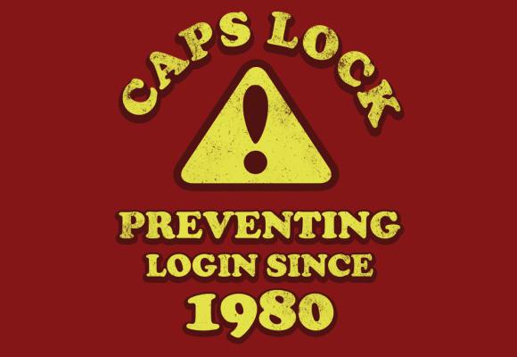
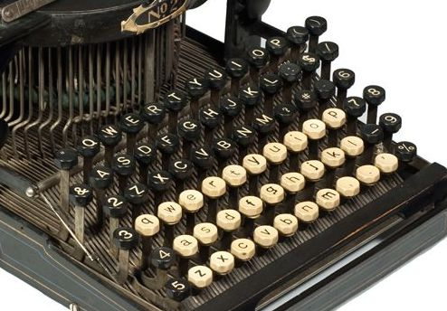
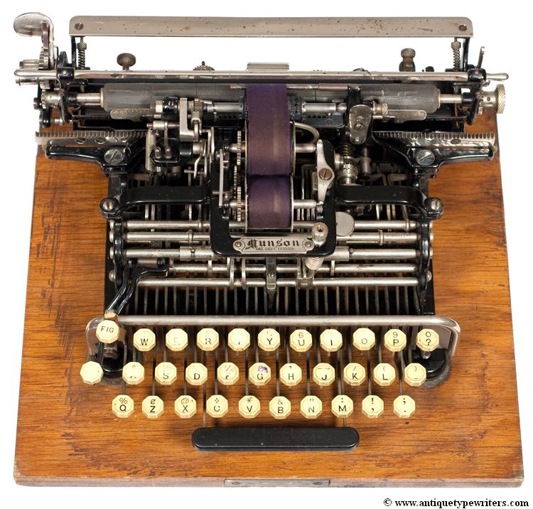
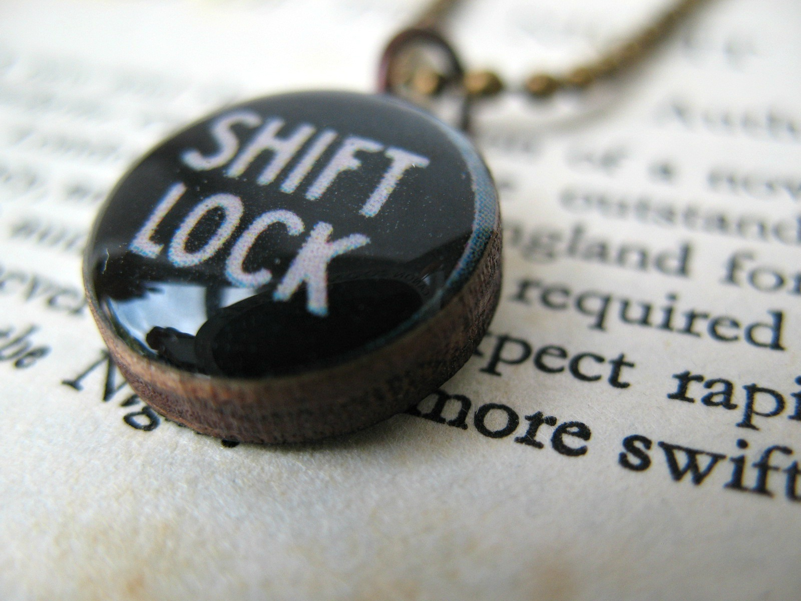
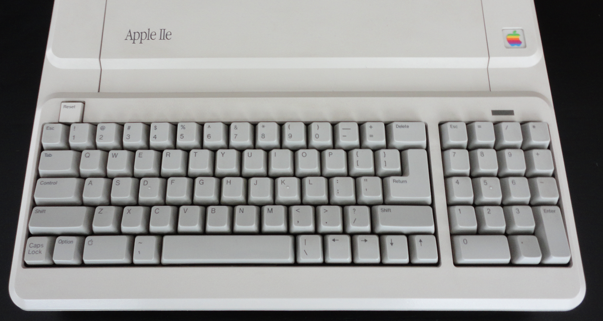
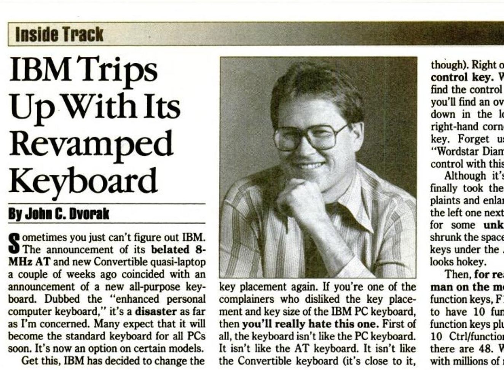

?
Function
- Toggle on and off
- Make you sound angry and/or stupid
- Prevent you from using a log in screen
Location
- Next to common letter
- Near a regularly used modifier
- Bigger than average
THE
F***
UP
BUTTON






REMAP!
- Karabiner for Mac
- XKB for Linux
- AutoHotKey for Windows
- Vi users - remap to Ctrl or ESC!
- Sublime users - remap to launch Vi!
- Sublime users - remap to Ctrl!
STILL NEED IT?
REMAP MOAR!